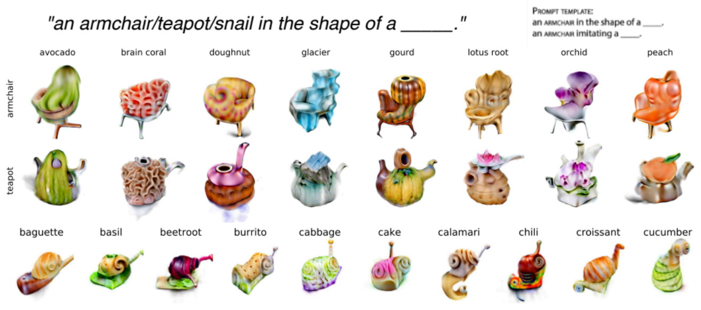
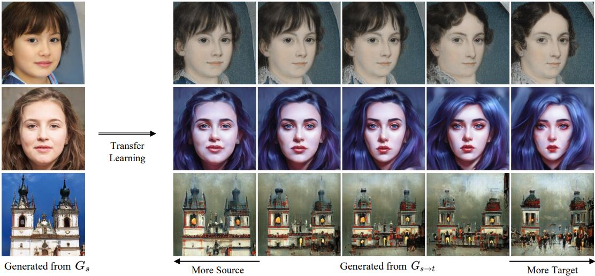
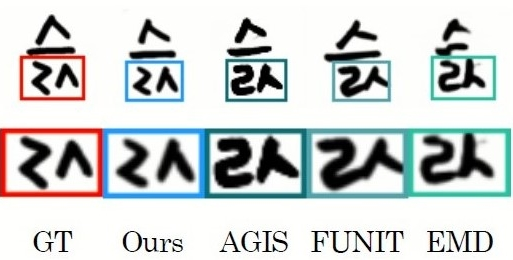
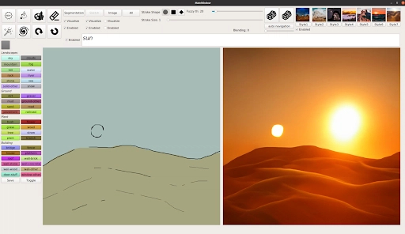
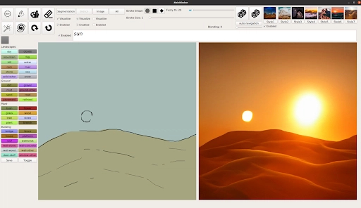

Jain et al., AI4CC 2022
Zero-Shot Text-Guided Object Generation with Dream Fields

Lee, Lee, Kim, Choi, & Kim, AI4CC 2022
Fix the Noise: Disentangling Source Feature for Transfer Learning of StyleGAN

Jang, Villegas, Yang, Ceylan, Sun, & Lee, AI4CC 2022
RiCS: A 2D Self-Occlusion Map for Harmonizing Volumetric Objects

Poirier-Ginter, Alexandre Lessard, Ryan Smith, Jean-François Lalonde, AI4CC 2022
Overparameterization Improves StyleGAN Inversion

Jahn et al., AI4CC 2021
High-Resolution Complex Scene Synthesis with Transformers

Rombach, Esser, and Ommer, AI4CC 2020
Network Fusion for Content Creation with Conditional INNs

Cha et al., AI4CC 2020
Toward High-quality Few-shot Font Generation with Dual Memory

Sylvain et al., AICC 2020
Object-Centric Image Generation from Layouts

 
